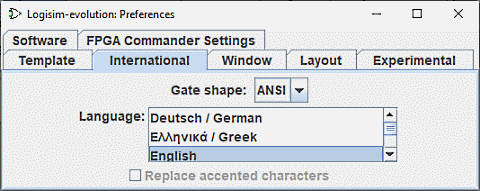

הכרטיסייה הבינלאומית

כרטיסייה זו מאפשרת הגדרה של Logisim לפי העדפות אזוריות.
-
צורת שער: Logisim תומכת בשני תקנים לשרטוט שערים: שערים IEC ו-ANSI. הטבלה הבאה ממחישה את ההבחנה.
ANSI חברת החשמל ו 
אוֹ מכיוון שסגנון ANSI נוטה להיות פופולרי יותר בארה"ב, בעוד שסגנון IEC נוטה להיות פופולרי יותר באירופה, יש אנשים שמתייחסים לסגנונות אלה לפי אזורים אלה.
לוגיסים לא עומדת בשום תקן בדיוק; הוא מנווט דרך אמצע כדי לאפשר מעבר ביניהם. בפרט, השערים המעוצבים מרובעים יותר מהמידות שהוגדרו על ידי ה-IEEE הרלוונטי תֶקֶן. ולמרות ששערי XOR ו-XNOR באמת צריכים להיות באותו רוחב כמו שערי OR ו-Nor עם בסגנון ANSI, הם לא בגלל קשיים בדחיסת שער IEC XOR.
-
שפה: שנה בין שפות. הגרסה הנוכחית מסופקת עם אנגלית, ספרדית, תרגומים לרוסית וגרמנית.
- התרגום לצרפתית הוצג בחלקו עם Logisim 2.13.22. הופק על ידי רוברטו Rigamonti והושלם ב-Logisim 2.14.2 מאת Marc-André Baillifard Université de Lausanne
- התרגום לגרמנית הוצג עם Logisim 2.6.1. זה מאת Uwe Zimmermann, פקולטה חבר באוניברסיטת אופסלה בשבדיה.
- התרגום ליוונית הוצג עם Logisim 2.7.0. זה מאת Thanos Kakarountas, א חבר סגל במכון החינוכי הטכנולוגי של האיים היוניים ביוון.
- התרגום לאיטלקית הוצג עם Logisim 2.14.7
- תרגום Nederlands הוצג עם Logisim 3.2.0
- תרגום פורטוגזית הוצג עם Logisim 2.6.2. זה מאת תלדו קרוז Franqueira, חבר סגל ב- Pontifícia Universidade Católica de Minas Gerais בברזיל.
- התרגום לרוסית הוצג עם Logisim 2.4.0. זה מאת איליה לילוב, מרוסיה.
- תרגום ספרדית הושלם החל מ-Logisim 2.1.0, אך גרסאות Logisim עוקבות הוסיפו אפשרויות חדשות שנותרו לא מתורגמות. תרם אותו פבלו ליאל ראמוס, מספרד.
- תרגום Polonaise הוצג עם Logisim Logisim 3.4.0
- תרגום Japonaise הוצג עם Logisim 3.4.2 זה על ידי Narita.
עקב השינויים, לא כל התרגומים באותה רמה ויש עוד הרבה מה לתרגם ותיקן. תרגומים ותיעוד Logisim יתקבלו בברכה! אם אתה מעוניין, אנא צור קשר github.com/logisim-evolution/logisim-evolution. זו לא תהיה התחייבות: אשמח לשמוע על התעניינותך, ואומר לך אם אני מכירים מישהו שעובד על זה כבר, הכינו לכם גרסה לעבודה ושלחו לכם הוראות. תהליך התרגום אינו מצריך הבנה של Java.
-
החלף תווים מודגשים: בחלק מהפלטפורמות יש תמיכה לקויה בתווים (כגון ñ או ö) שאינם מופיעים בערכת התווים של 7 סיביות ASCII. כאשר זה מסומן, Logisim תחליף את כולם מופעים של התווים עם תווי ASCII המקבילים המתאימים של 7 סיביות. תיבת הסימון היא מושבת כאשר לשפה הנוכחית אין מקבילות זמינות (כמו באנגלית).
הבא: כרטיסיית החלון.